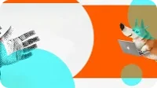
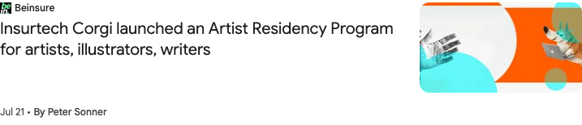

BeinsureCoverage
Insurtech Corgi launched an Artist Residency Program for artists, illustrators, writers
Corgi Cafe’s artist residency and the connection between creative communities and founder spaces, with comments from Trevor Owens.

View saved listing
Preserved from the supplied reference screenshot. This is the article listing, not the full article.

Check Wayback history ↗A history lookup, not a verified article backup.